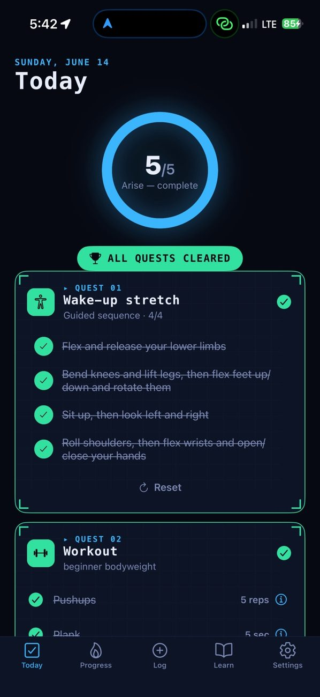
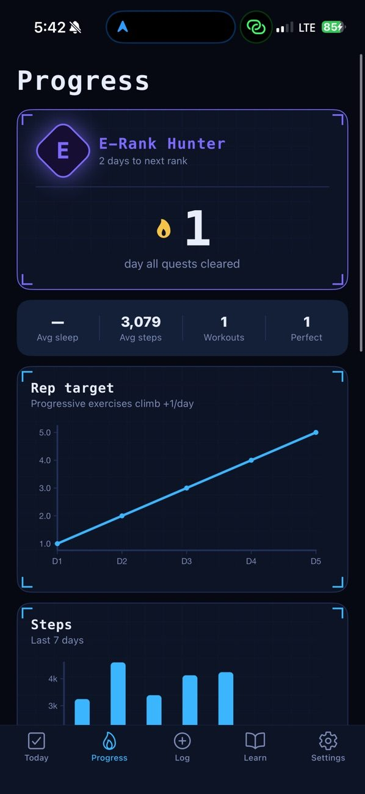
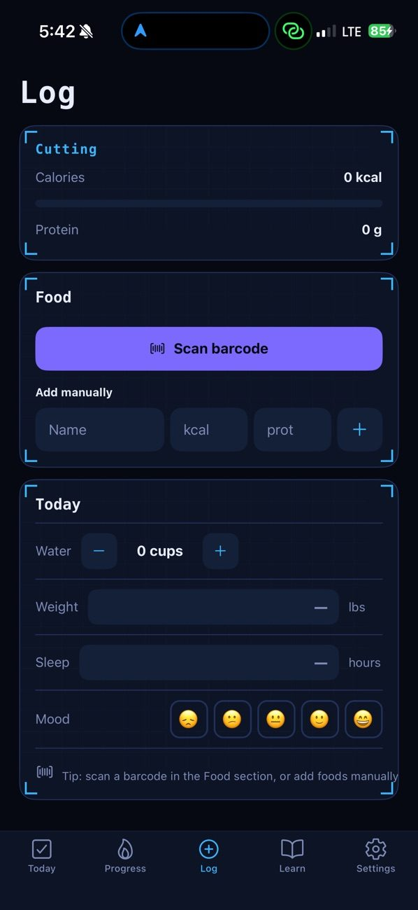
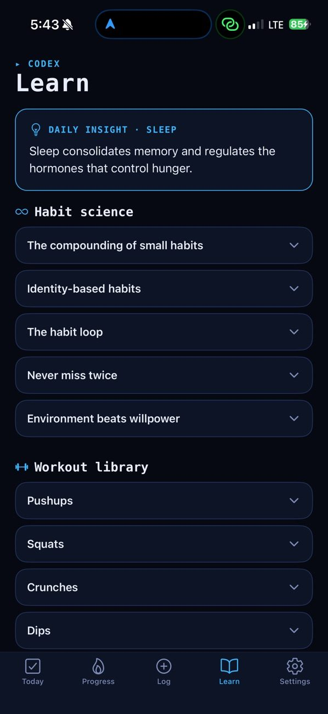
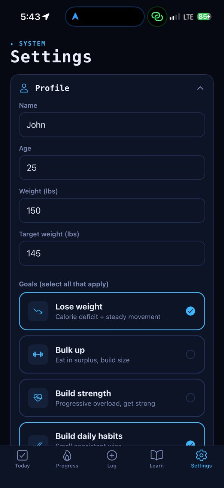

An iPhone app that turns your daily habits into quests.
Remake makes a daily self-improvement routine feel like a game. It borrows the “System” from the anime Solo Leveling: every day you get a set of quests (a wake-up stretch, a workout, nutrition, mindfulness and some activity), and clearing all of them keeps your streak alive. Streaks raise your Hunter rank, from E-Rank all the way to Monarch.
I took it from idea to the App Store on my own: designing the app, testing it on my phone and through TestFlight, going through Apple’s review, and writing the support and privacy pages. I built it with AI-assisted development (Claude Code), and I keep updating it as I use it.
iPhone app · Apple Health · Home-screen widget




